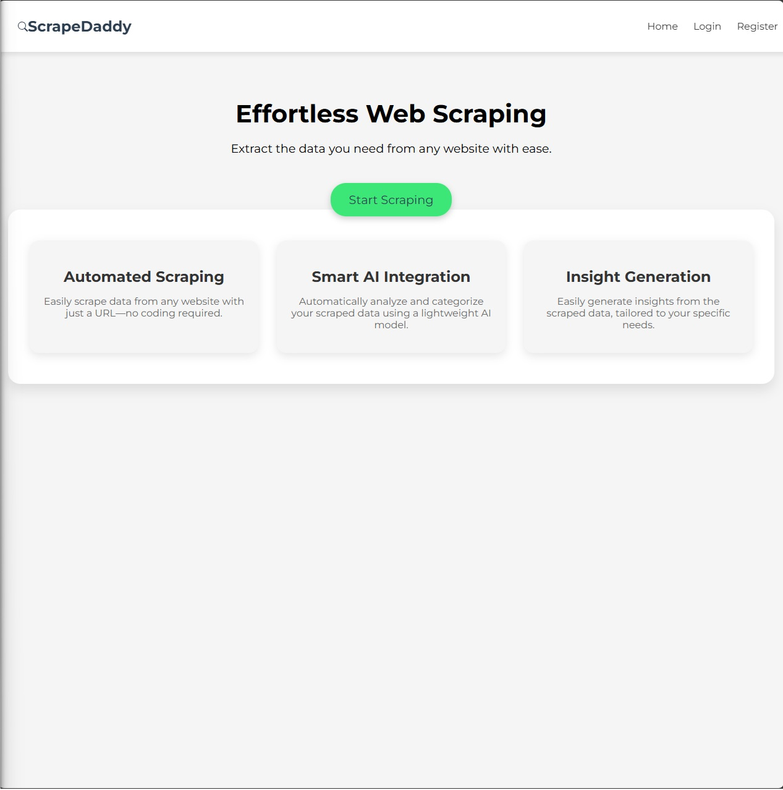
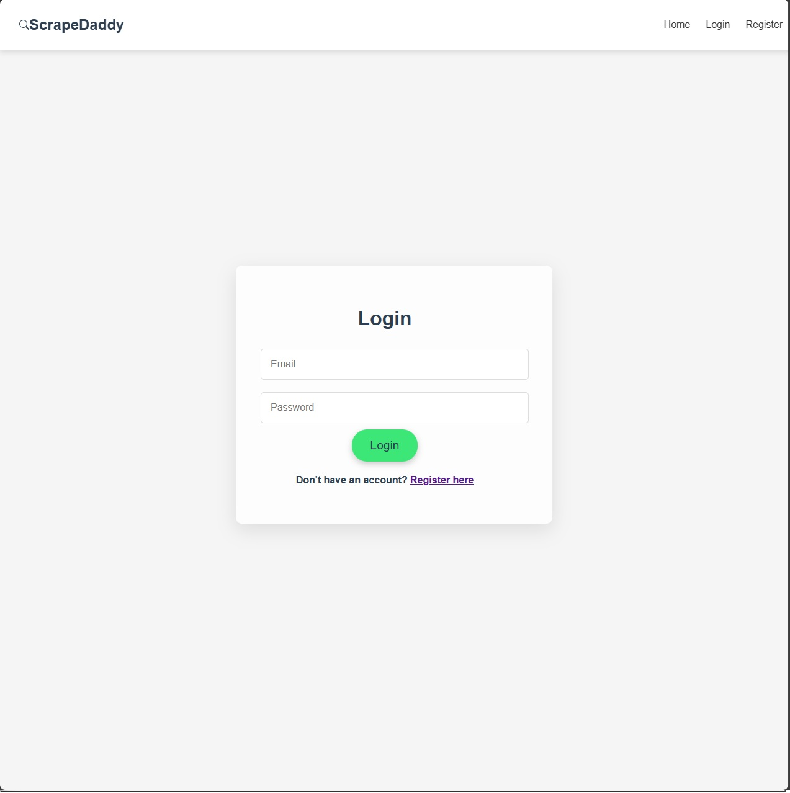
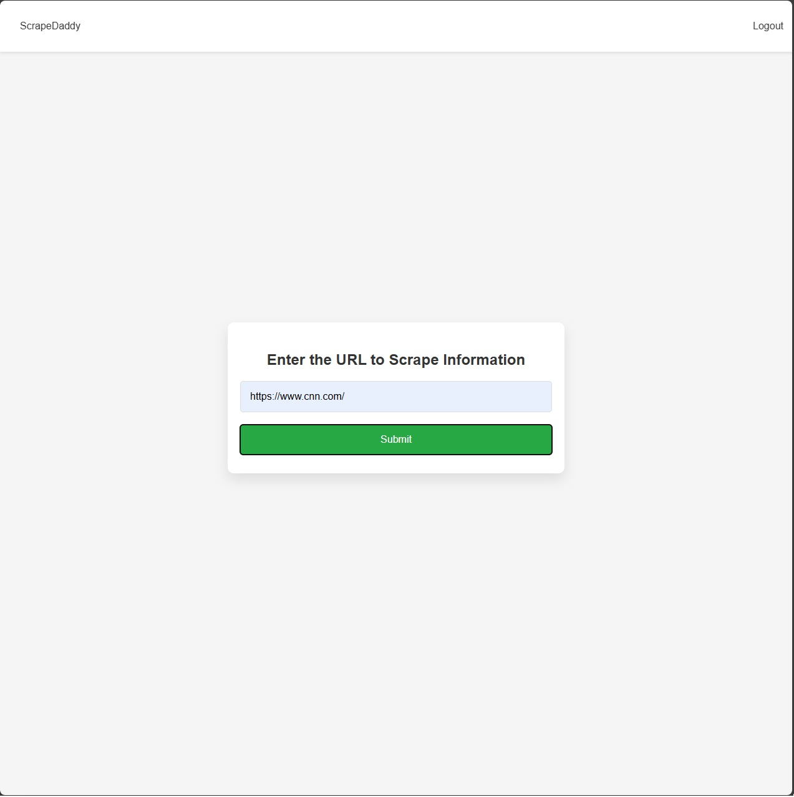
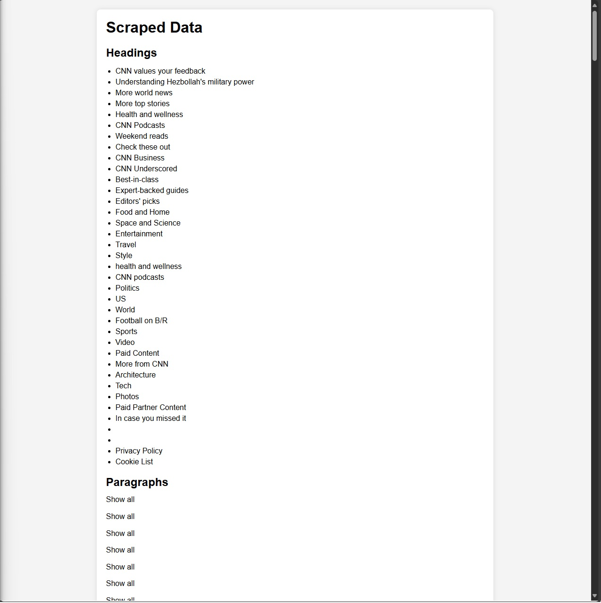

ScrapeDaddy
Project Overview
Introduction:
- Title: ScrapeDaddy
- Duration: August 2024
- Role: Software Developer
- Team: Ryan, Rajae, Osman, Emma, Sam
Summary:
ScrapeDaddy is a powerful and versatile web scraping application developed to simplify data extraction from any website. This project was created as part of a hackathon, where the goal was to build an innovative tool in a limited timeframe. With a user-friendly interface and a robust backend, ScrapeDaddy allows users to input any URL and scrape data effortlessly. Whether you're looking to collect product information, scrape articles, or gather statistical data, ScrapeDaddy makes web scraping accessible to everyone.
Key Features
- User-Friendly Interface: Input any URL to easily scrape data from the web.
- Secure Authentication: Firebase integration ensures that only authenticated users can access the scraping functionality.
- Advanced Web Scraping: Leverage Puppeteer’s capabilities to dynamically extract data from complex web pages.
- Broad Compatibility: Support for scraping a wide range of websites, regardless of their content structure.
Key Decisions and Implementation:
- User Interface: Designed an intuitive and user-friendly interface using React.js and Next.js.
- Version Control: Used Git for version control, ensuring smooth collaboration and code management.
Technologies and Tools:
- Node.js: The core framework for the application, handling server-side operations and managing requests.
- Firebase: Utilized for user authentication, ensuring secure access and management of user sessions.
- Puppeteer: A powerful library for web scraping, enabling ScrapeDaddy to navigate and extract data from various websites.
- HTML & CSS: Employed to build the responsive and user-friendly frontend of the application, providing a seamless user experience.
- Git: Implemented for version control to track changes and collaborate effectively.
Project Achievements
- Positive User Feedback: High user satisfaction with the platform's ease of use and relevance of suggestions.
Gallery/Visuals
Landing Page:
Login/Register Page:
User Entry Page:
Resulting Items:
- Challenge: Handling dynamic content on websites that rely heavily on JavaScript for loading data.
- Solution: Implemented Puppeteer’s headless browser capabilities to interact with web pages just like a regular user would. This allows ScrapeDaddy to wait for all dynamic content to load before scraping, ensuring comprehensive data extraction.
- Challenge: Ensuring data security and user authentication to prevent unauthorized access.
- Solution: Integrated Firebase for user authentication, providing secure login and session management. This ensures that only authorized users can access ScrapeDaddy’s scraping functionality.
Future Directions
- Expanded Data Formats: Adding support for exporting scraped data in various formats like CSV, Excel, and JSON for easier data manipulation and integration with other tools.
- Scheduled Scraping: Developing a feature that allows users to schedule scraping tasks at regular intervals, automating the data collection process.
- Enhanced Data Cleaning: Implementing advanced data cleaning algorithms to automatically remove unwanted elements like ads and duplicate content from scraped data.
- User Dashboard: Creating a user dashboard to manage scraped data, view scraping history, and access saved configurations for recurring tasks.
About the Development:
ScrapeDaddy was built as a Node.js application leveraging the power of Puppeteer for seamless web scraping. The frontend was crafted using HTML and CSS, providing users with a clean and intuitive interface. Firebase was integrated for secure user authentication, ensuring data privacy and protection. Developed during a hackathon, this project showcases the power of teamwork and innovation under time constraints, making web scraping more accessible to non-developers and enabling them to gather data from the web quickly and efficiently.
Source Code
View on GitHub